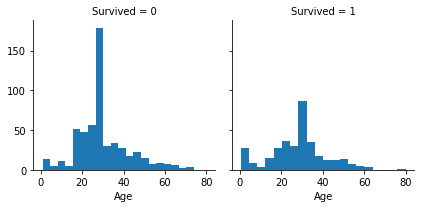
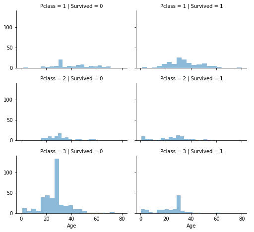

CLUSTERING CATEGORICAL DATA¶
Clustering adalah sebuah proses untuk mengelompokan data ke dalam beberapa cluster atau kelompok sehingga data dalam satu cluster memiliki tingkat kemiripan yang maksimum dan data antar cluster memiliki kemiripan yang minimum.
Metode K-Means Clustering¶
- Memiliki n buah data
- Input berupa jumlah data dan jumlah cluster (kelompok)
- Pada setiap cluster / kelompok memiliki sebuah centroid yang mempresentasikan cluster tersebut.
Algoritma K-Means¶
Secara sederhana algoritma K-Means dimulai dari tahap berikut :
- Pilih K buah titik centroid.
- Menghitung jarak data dengan centroid.
- Update nilai titik centroid.
- Ulangi langkah 2 dan 3 sampai nilai dari titik centroid tidak lagi berubah.
Rumus K-Means¶
Metode K-Modes¶
Metode K-Prototype¶
Algoritma K-Prototype¶
- Tahap 1:
Tentukan K dengan inisial kluster z1, z2, ...,zk secara acak dari n buah titik {x1, x2,...,xn}
- Tahap 2
Hitung jarak seluruh data point pada datas et terhadap inisial kluster awal, alokasikan data point ke dalam cluster yang memilik i jarak prototype terdekat dengan object yang diukur.
- Tahap 3
Hitung titik pusat cluster yang baru setela h semua objek dialokasikan. Lalu realokasikan semua datapoint pada dataset terhadap prototype yang baru
- Tahap 4
jika titik pusat cluster tidak berubah ata u sudah konvergen maka proses algoritma berhenti tetapi jika titik pusat masih be rubah-ubah secara signifikan maka proses kembali ke tahap 2 dan 3 hingga iterasi maksimum tercapai atau sudah tidak ada perpindahan objek.
berikut contoh clustering menggunakan sklearn
import pandas as pd import numpy as np from sklearn.cluster import KMeans from sklearn.preprocessing import LabelEncoder from sklearn.preprocessing import MinMaxScaler import seaborn as sns import matplotlib.pyplot as plt %matplotlib inline train = pd.read_csv('train.csv') train test = pd.read_csv('test.csv') test
| PassengerId | Pclass | Name | Sex | Age | SibSp | Parch | Ticket | Fare | Cabin | Embarked | |
|---|---|---|---|---|---|---|---|---|---|---|---|
| 0 | 892 | 3 | Kelly, Mr. James | male | 34.5 | 0 | 0 | 330911 | 7.8292 | NaN | Q |
| 1 | 893 | 3 | Wilkes, Mrs. James (Ellen Needs) | female | 47.0 | 1 | 0 | 363272 | 7.0000 | NaN | S |
| 2 | 894 | 2 | Myles, Mr. Thomas Francis | male | 62.0 | 0 | 0 | 240276 | 9.6875 | NaN | Q |
| 3 | 895 | 3 | Wirz, Mr. Albert | male | 27.0 | 0 | 0 | 315154 | 8.6625 | NaN | S |
| 4 | 896 | 3 | Hirvonen, Mrs. Alexander (Helga E Lindqvist) | female | 22.0 | 1 | 1 | 3101298 | 12.2875 | NaN | S |
| 5 | 897 | 3 | Svensson, Mr. Johan Cervin | male | 14.0 | 0 | 0 | 7538 | 9.2250 | NaN | S |
| 6 | 898 | 3 | Connolly, Miss. Kate | female | 30.0 | 0 | 0 | 330972 | 7.6292 | NaN | Q |
| 7 | 899 | 2 | Caldwell, Mr. Albert Francis | male | 26.0 | 1 | 1 | 248738 | 29.0000 | NaN | S |
| 8 | 900 | 3 | Abrahim, Mrs. Joseph (Sophie Halaut Easu) | female | 18.0 | 0 | 0 | 2657 | 7.2292 | NaN | C |
| 9 | 901 | 3 | Davies, Mr. John Samuel | male | 21.0 | 2 | 0 | A/4 48871 | 24.1500 | NaN | S |
| 10 | 902 | 3 | Ilieff, Mr. Ylio | male | NaN | 0 | 0 | 349220 | 7.8958 | NaN | S |
| 11 | 903 | 1 | Jones, Mr. Charles Cresson | male | 46.0 | 0 | 0 | 694 | 26.0000 | NaN | S |
| 12 | 904 | 1 | Snyder, Mrs. John Pillsbury (Nelle Stevenson) | female | 23.0 | 1 | 0 | 21228 | 82.2667 | B45 | S |
| 13 | 905 | 2 | Howard, Mr. Benjamin | male | 63.0 | 1 | 0 | 24065 | 26.0000 | NaN | S |
| 14 | 906 | 1 | Chaffee, Mrs. Herbert Fuller (Carrie Constance... | female | 47.0 | 1 | 0 | W.E.P. 5734 | 61.1750 | E31 | S |
| 15 | 907 | 2 | del Carlo, Mrs. Sebastiano (Argenia Genovesi) | female | 24.0 | 1 | 0 | SC/PARIS 2167 | 27.7208 | NaN | C |
| 16 | 908 | 2 | Keane, Mr. Daniel | male | 35.0 | 0 | 0 | 233734 | 12.3500 | NaN | Q |
| 17 | 909 | 3 | Assaf, Mr. Gerios | male | 21.0 | 0 | 0 | 2692 | 7.2250 | NaN | C |
| 18 | 910 | 3 | Ilmakangas, Miss. Ida Livija | female | 27.0 | 1 | 0 | STON/O2. 3101270 | 7.9250 | NaN | S |
| 19 | 911 | 3 | Assaf Khalil, Mrs. Mariana (Miriam")" | female | 45.0 | 0 | 0 | 2696 | 7.2250 | NaN | C |
| 20 | 912 | 1 | Rothschild, Mr. Martin | male | 55.0 | 1 | 0 | PC 17603 | 59.4000 | NaN | C |
| 21 | 913 | 3 | Olsen, Master. Artur Karl | male | 9.0 | 0 | 1 | C 17368 | 3.1708 | NaN | S |
| 22 | 914 | 1 | Flegenheim, Mrs. Alfred (Antoinette) | female | NaN | 0 | 0 | PC 17598 | 31.6833 | NaN | S |
| 23 | 915 | 1 | Williams, Mr. Richard Norris II | male | 21.0 | 0 | 1 | PC 17597 | 61.3792 | NaN | C |
| 24 | 916 | 1 | Ryerson, Mrs. Arthur Larned (Emily Maria Borie) | female | 48.0 | 1 | 3 | PC 17608 | 262.3750 | B57 B59 B63 B66 | C |
| 25 | 917 | 3 | Robins, Mr. Alexander A | male | 50.0 | 1 | 0 | A/5. 3337 | 14.5000 | NaN | S |
| 26 | 918 | 1 | Ostby, Miss. Helene Ragnhild | female | 22.0 | 0 | 1 | 113509 | 61.9792 | B36 | C |
| 27 | 919 | 3 | Daher, Mr. Shedid | male | 22.5 | 0 | 0 | 2698 | 7.2250 | NaN | C |
| 28 | 920 | 1 | Brady, Mr. John Bertram | male | 41.0 | 0 | 0 | 113054 | 30.5000 | A21 | S |
| 29 | 921 | 3 | Samaan, Mr. Elias | male | NaN | 2 | 0 | 2662 | 21.6792 | NaN | C |
| ... | ... | ... | ... | ... | ... | ... | ... | ... | ... | ... | ... |
| 388 | 1280 | 3 | Canavan, Mr. Patrick | male | 21.0 | 0 | 0 | 364858 | 7.7500 | NaN | Q |
| 389 | 1281 | 3 | Palsson, Master. Paul Folke | male | 6.0 | 3 | 1 | 349909 | 21.0750 | NaN | S |
| 390 | 1282 | 1 | Payne, Mr. Vivian Ponsonby | male | 23.0 | 0 | 0 | 12749 | 93.5000 | B24 | S |
| 391 | 1283 | 1 | Lines, Mrs. Ernest H (Elizabeth Lindsey James) | female | 51.0 | 0 | 1 | PC 17592 | 39.4000 | D28 | S |
| 392 | 1284 | 3 | Abbott, Master. Eugene Joseph | male | 13.0 | 0 | 2 | C.A. 2673 | 20.2500 | NaN | S |
| 393 | 1285 | 2 | Gilbert, Mr. William | male | 47.0 | 0 | 0 | C.A. 30769 | 10.5000 | NaN | S |
| 394 | 1286 | 3 | Kink-Heilmann, Mr. Anton | male | 29.0 | 3 | 1 | 315153 | 22.0250 | NaN | S |
| 395 | 1287 | 1 | Smith, Mrs. Lucien Philip (Mary Eloise Hughes) | female | 18.0 | 1 | 0 | 13695 | 60.0000 | C31 | S |
| 396 | 1288 | 3 | Colbert, Mr. Patrick | male | 24.0 | 0 | 0 | 371109 | 7.2500 | NaN | Q |
| 397 | 1289 | 1 | Frolicher-Stehli, Mrs. Maxmillian (Margaretha ... | female | 48.0 | 1 | 1 | 13567 | 79.2000 | B41 | C |
| 398 | 1290 | 3 | Larsson-Rondberg, Mr. Edvard A | male | 22.0 | 0 | 0 | 347065 | 7.7750 | NaN | S |
| 399 | 1291 | 3 | Conlon, Mr. Thomas Henry | male | 31.0 | 0 | 0 | 21332 | 7.7333 | NaN | Q |
| 400 | 1292 | 1 | Bonnell, Miss. Caroline | female | 30.0 | 0 | 0 | 36928 | 164.8667 | C7 | S |
| 401 | 1293 | 2 | Gale, Mr. Harry | male | 38.0 | 1 | 0 | 28664 | 21.0000 | NaN | S |
| 402 | 1294 | 1 | Gibson, Miss. Dorothy Winifred | female | 22.0 | 0 | 1 | 112378 | 59.4000 | NaN | C |
| 403 | 1295 | 1 | Carrau, Mr. Jose Pedro | male | 17.0 | 0 | 0 | 113059 | 47.1000 | NaN | S |
| 404 | 1296 | 1 | Frauenthal, Mr. Isaac Gerald | male | 43.0 | 1 | 0 | 17765 | 27.7208 | D40 | C |
| 405 | 1297 | 2 | Nourney, Mr. Alfred (Baron von Drachstedt")" | male | 20.0 | 0 | 0 | SC/PARIS 2166 | 13.8625 | D38 | C |
| 406 | 1298 | 2 | Ware, Mr. William Jeffery | male | 23.0 | 1 | 0 | 28666 | 10.5000 | NaN | S |
| 407 | 1299 | 1 | Widener, Mr. George Dunton | male | 50.0 | 1 | 1 | 113503 | 211.5000 | C80 | C |
| 408 | 1300 | 3 | Riordan, Miss. Johanna Hannah"" | female | NaN | 0 | 0 | 334915 | 7.7208 | NaN | Q |
| 409 | 1301 | 3 | Peacock, Miss. Treasteall | female | 3.0 | 1 | 1 | SOTON/O.Q. 3101315 | 13.7750 | NaN | S |
| 410 | 1302 | 3 | Naughton, Miss. Hannah | female | NaN | 0 | 0 | 365237 | 7.7500 | NaN | Q |
| 411 | 1303 | 1 | Minahan, Mrs. William Edward (Lillian E Thorpe) | female | 37.0 | 1 | 0 | 19928 | 90.0000 | C78 | Q |
| 412 | 1304 | 3 | Henriksson, Miss. Jenny Lovisa | female | 28.0 | 0 | 0 | 347086 | 7.7750 | NaN | S |
| 413 | 1305 | 3 | Spector, Mr. Woolf | male | NaN | 0 | 0 | A.5. 3236 | 8.0500 | NaN | S |
| 414 | 1306 | 1 | Oliva y Ocana, Dona. Fermina | female | 39.0 | 0 | 0 | PC 17758 | 108.9000 | C105 | C |
| 415 | 1307 | 3 | Saether, Mr. Simon Sivertsen | male | 38.5 | 0 | 0 | SOTON/O.Q. 3101262 | 7.2500 | NaN | S |
| 416 | 1308 | 3 | Ware, Mr. Frederick | male | NaN | 0 | 0 | 359309 | 8.0500 | NaN | S |
| 417 | 1309 | 3 | Peter, Master. Michael J | male | NaN | 1 | 1 | 2668 | 22.3583 | NaN | C |
418 rows × 11 columns
print("***** Train_Set *****") print(train.head()) print("\n") print("***** Test_Set *****") print(test.head())
***** Train_Set *****
PassengerId Survived Pclass \
0 1 0 3
1 2 1 1
2 3 1 3
3 4 1 1
4 5 0 3
Name Sex Age SibSp \
0 Braund, Mr. Owen Harris male 22.0 1
1 Cumings, Mrs. John Bradley (Florence Briggs Th... female 38.0 1
2 Heikkinen, Miss. Laina female 26.0 0
3 Futrelle, Mrs. Jacques Heath (Lily May Peel) female 35.0 1
4 Allen, Mr. William Henry male 35.0 0
Parch Ticket Fare Cabin Embarked
0 0 A/5 21171 7.2500 NaN S
1 0 PC 17599 71.2833 C85 C
2 0 STON/O2. 3101282 7.9250 NaN S
3 0 113803 53.1000 C123 S
4 0 373450 8.0500 NaN S
* Test_Set ***
PassengerId Pclass Name Sex \
0 892 3 Kelly, Mr. James male
1 893 3 Wilkes, Mrs. James (Ellen Needs) female
2 894 2 Myles, Mr. Thomas Francis male
3 895 3 Wirz, Mr. Albert male
4 896 3 Hirvonen, Mrs. Alexander (Helga E Lindqvist) female
Age SibSp Parch Ticket Fare Cabin Embarked
0 34.5 0 0 330911 7.8292 NaN Q
1 47.0 1 0 363272 7.0000 NaN S
2 62.0 0 0 240276 9.6875 NaN Q
3 27.0 0 0 315154 8.6625 NaN S
4 22.0 1 1 3101298 12.2875 NaN S
print("***** Train_Set *****") print(train.describe()) print("\n") print("***** Test_Set *****") print(test.describe())
***** Train_Set *****
PassengerId Survived Pclass Age SibSp \
count 891.000000 891.000000 891.000000 714.000000 891.000000
mean 446.000000 0.383838 2.308642 29.699118 0.523008
std 257.353842 0.486592 0.836071 14.526497 1.102743
min 1.000000 0.000000 1.000000 0.420000 0.000000
25% 223.500000 0.000000 2.000000 20.125000 0.000000
50% 446.000000 0.000000 3.000000 28.000000 0.000000
75% 668.500000 1.000000 3.000000 38.000000 1.000000
max 891.000000 1.000000 3.000000 80.000000 8.000000
Parch Fare
count 891.000000 891.000000
mean 0.381594 32.204208
std 0.806057 49.693429
min 0.000000 0.000000
25% 0.000000 7.910400
50% 0.000000 14.454200
75% 0.000000 31.000000
max 6.000000 512.329200
* Test_Set ***
PassengerId Pclass Age SibSp Parch Fare
count 418.000000 418.000000 332.000000 418.000000 418.000000 417.000000
mean 1100.500000 2.265550 30.272590 0.447368 0.392344 35.627188
std 120.810458 0.841838 14.181209 0.896760 0.981429 55.907576
min 892.000000 1.000000 0.170000 0.000000 0.000000 0.000000
25% 996.250000 1.000000 21.000000 0.000000 0.000000 7.895800
50% 1100.500000 3.000000 27.000000 0.000000 0.000000 14.454200
75% 1204.750000 3.000000 39.000000 1.000000 0.000000 31.500000
max 1309.000000 3.000000 76.000000 8.000000 9.000000 512.329200
print(train.columns.values) ['PassengerId' 'Survived' 'Pclass' 'Name' 'Sex' 'Age' 'SibSp' 'Parch' 'Ticket' 'Fare' 'Cabin' 'Embarked'] train.isna().head()
['PassengerId' 'Survived' 'Pclass' 'Name' 'Sex' 'Age' 'SibSp' 'Parch' 'Ticket' 'Fare' 'Cabin' 'Embarked']
| PassengerId | Survived | Pclass | Name | Sex | Age | SibSp | Parch | Ticket | Fare | Cabin | Embarked | |
|---|---|---|---|---|---|---|---|---|---|---|---|---|
| 0 | False | False | False | False | False | False | False | False | False | False | True | False |
| 1 | False | False | False | False | False | False | False | False | False | False | False | False |
| 2 | False | False | False | False | False | False | False | False | False | False | True | False |
| 3 | False | False | False | False | False | False | False | False | False | False | False | False |
| 4 | False | False | False | False | False | False | False | False | False | False | True | False |
print("*****In the train set*****") print(train.isna().sum()) print("\n") print("*****In the test set*****") print(test.isna().sum())
*****In the train set***** PassengerId 0 Survived 0 Pclass 0 Name 0 Sex 0 Age 177 SibSp 0 Parch 0 Ticket 0 Fare 0 Cabin 687 Embarked 2 dtype: int64
*In the test set***
PassengerId 0
Pclass 0
Name 0
Sex 0
Age 86
SibSp 0
Parch 0
Ticket 0
Fare 1
Cabin 327
Embarked 0
dtype: int64
train.fillna(train.mean(), inplace=True) test.fillna(test.mean(), inplace=True) print(train.isna().sum())
PassengerId 0 Survived 0 Pclass 0 Name 0 Sex 0 Age 0 SibSp 0 Parch 0 Ticket 0 Fare 0 Cabin 687 Embarked 2 dtype: int64
train['Ticket'].head()
0 A/5 21171 1 PC 17599 2 STON/O2. 3101282 3 113803 4 373450 Name: Ticket, dtype: object
train['Cabin'].head()
0 NaN 1 C85 2 NaN 3 C123 4 NaN Name: Cabin, dtype: object
train[['Pclass', 'Survived']].groupby(['Pclass'], as_index=False).mean().sort_values(by='Survived', ascending=False)
| Pclass | Survived | |
|---|---|---|
| 0 | 1 | 0.629630 |
| 1 | 2 | 0.472826 |
| 2 | 3 | 0.242363 |
train[["Sex", "Survived"]].groupby(['Sex'], as_index=False).mean().sort_values(by='Survived', ascending=False)
| Sex | Survived | |
|---|---|---|
| 0 | female | 0.742038 |
| 1 | male | 0.188908 |
train[["SibSp", "Survived"]].groupby(['SibSp'], as_index=False).mean().sort_values(by='Survived', ascending=False)
| SibSp | Survived | |
|---|---|---|
| 1 | 1 | 0.535885 |
| 2 | 2 | 0.464286 |
| 0 | 0 | 0.345395 |
| 3 | 3 | 0.250000 |
| 4 | 4 | 0.166667 |
| 5 | 5 | 0.000000 |
| 6 | 8 | 0.000000 |
g = sns.FacetGrid(train, col='Survived') g.map(plt.hist, 'Age', bins=20)
<seaborn.axisgrid.FacetGrid at 0x19449c70a20>

grid = sns.FacetGrid(train, col='Survived', row='Pclass', size=2.2, aspect=1.6) grid.map(plt.hist, 'Age', alpha=.5, bins=20) grid.add_legend();
F:\anaqonda\lib\site-packages\seaborn\axisgrid.py:230: UserWarning: The `size` paramter has been renamed to `height`; please update your code. warnings.warn(msg, UserWarning)

train.info()
<class 'pandas.core.frame.DataFrame'> RangeIndex: 891 entries, 0 to 890 Data columns (total 12 columns): PassengerId 891 non-null int64 Survived 891 non-null int64 Pclass 891 non-null int64 Name 891 non-null object Sex 891 non-null object Age 891 non-null float64 SibSp 891 non-null int64 Parch 891 non-null int64 Ticket 891 non-null object Fare 891 non-null float64 Cabin 204 non-null object Embarked 889 non-null object dtypes: float64(2), int64(5), object(5) memory usage: 83.6+ KB
train = train.drop(['Name','Ticket', 'Cabin','Embarked'], axis=1) test = test.drop(['Name','Ticket', 'Cabin','Embarked'], axis=1)
labelEncoder = LabelEncoder() labelEncoder.fit(train['Sex']) labelEncoder.fit(test['Sex']) train['Sex'] = labelEncoder.transform(train['Sex']) test['Sex'] = labelEncoder.transform(test['Sex']) train.info()
<class 'pandas.core.frame.DataFrame'> RangeIndex: 891 entries, 0 to 890 Data columns (total 8 columns): PassengerId 891 non-null int64 Survived 891 non-null int64 Pclass 891 non-null int64 Sex 891 non-null int32 Age 891 non-null float64 SibSp 891 non-null int64 Parch 891 non-null int64 Fare 891 non-null float64 dtypes: float64(2), int32(1), int64(5) memory usage: 52.3 KB
test.info()
<class 'pandas.core.frame.DataFrame'> RangeIndex: 418 entries, 0 to 417 Data columns (total 7 columns): PassengerId 418 non-null int64 Pclass 418 non-null int64 Sex 418 non-null int32 Age 418 non-null float64 SibSp 418 non-null int64 Parch 418 non-null int64 Fare 418 non-null float64 dtypes: float64(2), int32(1), int64(4) memory usage: 21.3 KB
X = np.array(train.drop(['Survived'], 1).astype(float)) y = np.array(train['Survived']) train.info()
<class 'pandas.core.frame.DataFrame'> RangeIndex: 891 entries, 0 to 890 Data columns (total 8 columns): PassengerId 891 non-null int64 Survived 891 non-null int64 Pclass 891 non-null int64 Sex 891 non-null int32 Age 891 non-null float64 SibSp 891 non-null int64 Parch 891 non-null int64 Fare 891 non-null float64 dtypes: float64(2), int32(1), int64(5) memory usage: 52.3 KB
kmeans = KMeans(n_clusters=2) kmeans.fit(X)
KMeans(algorithm='auto', copy_x=True, init='k-means++', max_iter=300,
n_clusters=2, n_init=10, n_jobs=None, precompute_distances='auto',
random_state=None, tol=0.0001, verbose=0)
correct = 0 for i in range(len(X)): predict_me = np.array(X[i].astype(float)) predict_me = predict_me.reshape(-1, len(predict_me)) prediction = kmeans.predict(predict_me) if prediction[0] == y[i]: correct += 1 print(correct/len(X))
0.49158249158249157